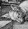

Cited Works of Interactive Fiction

The following bibliography includes only those works cited in the
text of this book: it makes no claim to completeness or even balance.
An index entry is followed by designer's name, publisher or organisation
(if any) and date of first substantial version. The following denote
formats: ZM for Z-Machine, L9 for Level 9's A-code, AGT for the
Adventure Game Toolkit run-time, TADS for TADS run-time and SA for
Scott Adams's format. Games in each of these formats can be played
on most modern computers. Scott Adams, “Quill”-written
and Cambridge University games can all be mechanically translated
to Inform and then recompiled as ZM. The symbol ◊ marks
that the game can be downloaded from ftp.gmd.de, though
for early games sometimes only in source code format. Sa1
and Sa2 indicate that a playable demonstration can be found
on Infocom's first or second sampler game, each of which is ◊.
Most Infocom games are widely available in remarkably inexpensive
packages marketed by Activision. The ‘Zork’ trilogy
has often been freely downloadable from Activision web sites to
promote the “Infocom” brand, as has ‘Zork: The
Undiscovered Underground’.
- ‘Abenteuer’,
264.
German translation of ‘Advent’ by Toni Arnold (1998). ZM ◊
- ‘Acheton’,
3,
113 ex8,
348,
353,
399.
David Seal, Jonathan Thackray with Jonathan Partington, Cambridge University
and later Acornsoft, Topologika (1978–9).
- ‘Advent’,
2,
47,
48,
59,
60,
75,
86,
95,
99,
102,
105,
113 ex8,
114,
121,
124,
126,
142,
146,
147,
151,
159,
179,
220,
221,
243,
264,
312 ex125,
344,
370,
377,
385,
386,
390,
393,
394,
396,
398,
403,
404,
509 an125.
Will Crowther (c. 1975) and Don Woods (1976). Ported to many formats,
including L9, TADS and ZM. ◊
- ‘Advent (430-point version)’,
349.
Extension by Don Woods (1978). ◊
- ‘Advent (501-point version)’,
349.
Extension by David Long (1978). ◊ Also available in a TADS
version (albeit out of 551 points) by David Picton. ◊
- ‘Advent (550-point version)’,
349.
Extension by David Platt (1979). ◊
- ‘Adventure Quest’,
370,
389,
403.
Mike, Nick and Pete Austin, Level 9 (1983). L9
- ‘Adventureland’,
2,
121,
151,
200,
200,
348,
349,
358,
393.
Scott Adams, Adventure International (1978). SA ◊.
Also an Inform version (1994). ZM ◊
- ‘Alice Through the Looking-Glass’,
2,
86,
121,
130,
142,
210,
221.
Gareth Rees, Inform tutorial example, from the opening scenes of the
novel by Lewis Carroll. ZM ◊
- ‘Amnesia’,
352,
378.
Thomas M. Disch, Electronic Arts (1986).
- ‘Asylum’,
352.
William Denman, Med Systems Software (1985).
- ‘Aventura’,
243,
264.
Spanish translation of ‘Advent’ by Jose Luiz Diaz
(1997). ZM ◊
- ‘Avon’,
367,
392.
Jonathan Partington, Cambridge University (1982), Topologika.
- ‘Balances’,
2,
86,
121,
130,
135,
142,
151,
159,
193,
200,
210,
214,
221,
234,
236,
242.
Graham Nelson (1994). ZM ◊
- ‘Ballyhoo’,
354,
372,
378,
383.
Jeff O'Neill, Infocom (1985). ZM
- ‘Beyond Zork’,
42,
317,
371,
392.
Brian Moriarty, Infocom (1987). ZM
- ‘BJ Drifter’,
374.
Big Al (1998). ZM ◊
- ‘Border Zone’,
401.
Marc Blank, Infocom (1987). ZM
- ‘Brand X’,
364,
392.
Peter Killworth and Jonathan Mestel, Cambridge University (1983).
Also ZM ◊. Evolved into ‘Philosopher's Quest’,
q.v.
- ‘Breakers’,
355.
Rod Smith, Joe Vierra and William Mataga, Synapse Software (1986).
- ‘Brimstone: The Dream of Gawain’,
356.
James Paul, David Bunch and Bill Darrah, Synapse Software (1985).
- ‘Castle of Riddles’,
352.
Peter Killworth, Acornsoft (1984).
- ‘A Change in the Weather’,
400.
Andrew Plotkin (1995). ZM ◊
- ‘Christminster’,
115,
361,
372,
375,
377,
378,
381,
386,
387,
391,
400.
Gareth Rees (1995). ZM ◊
- ‘Coke Is It’,
115.
Lucian Smith, J. Robinson Wheeler, Michael Fessler, Adam Cadre,
Dan Shiovitz and David Dyte (1999). ZM ◊
- ‘Colossal Adventure’,
349.
Pete Austin's port of ‘Advent’ for Level 9 (1983). L9
- ‘Colossal Cave’,
75.
Pete Austin's port of ‘Advent’ for Level 9 (1983). L9
- ‘Cosmic Capers’,
366.
See ‘HitchHiker-64’.
- ‘CosmoServe’,
360.
Judith Pintar (1991). AGT ◊
- ‘Countdown to Doom’,
353.
Peter Killworth, Acornsoft (1984) and subsequently Topologika.
- ‘The Cove’,
362.
Kathleen M. Fischer (2000). ZM ◊
- ‘The Crack of Doom’,
380.
Norton Truter, John Haward and Philip Mitchell, Melbourne House (1989),
from The Lord of the Rings by J. R. R. Tolkien.
- ‘The Creation’,
144.
Suggested but never-written Infocom game by Marc Blank.
- ‘Crobe’,
377,
385.
Jonathan Partington, Cambridge University (1986). Also ZM ◊
- ‘Curses’,
38,
89,
105,
156 ex52,
187,
188,
203,
285,
334,
336,
361,
370,
370,
373,
375,
380,
394,
406,
439 an9,
462 an52.
Graham Nelson (1993). ZM ◊
- ‘Cutthroats’,
397.
Mike Berlyn and Jerry Wolper, Infocom (1984). ZM
- ‘Dallas Quest’,
351.
James Garon, Datasoft (1984), from the television soap opera.
- ‘Dog Star Adventure’,
358.
Lance Micklus (1979). ◊
- ‘Dungeon Adventure’,
370,
393.
Mike, Nick and Pete Austin, Level 9 (1984). L9
- ‘Edifice’,
392,
395.
Lucian Smith (1997). ZM ◊
- ‘Enchanter’,
35,
193,
349,
370,
371,
375,
381,
386,
394,
399.
Marc Blank and Dave Lebling, Infocom (1983). ZM
- ‘Essex’,
356.
Bill Darrah, Synapse Software (1985).
- ‘Essex MUD’,
346.
Roy Trubshaw and Richard Bartle (1979).
- ‘Fahrenheit 451’,
351.
Len Neufeld and Byron Preiss, Spinnaker/Telarium (1984),
from the novel by Ray Bradbury.
- ‘Feasibility Experiment’,
399.
Brian Howarth, Mysterious Adventures (1982). SA ◊
- ‘The Fellowship of the Ring’,
380.
U.S. title of Addison-Wesley re-release of ‘Lord of the Rings
Game One’, q.v.
- ‘Freefall’,
320.
A port of ‘Tetris’ by Andrew Plotkin (1995). ZM ◊
- ‘Fyleet’,
347,
385.
Jonathan Partington, Cambridge University (1985). Also ZM ◊
- ‘Galatea’,
362.
Emily Short (2000). ZM ◊
- ‘Gateway II: Homeworld’,
357.
Mike Verdu and Glen Dahlgren, Legend Entertainment (1993).
- ‘Gateway to Karos’,
240 ex106,
399.
Derek Haslam, Acornsoft (1984). ◊ Translated to Inform by
Joyce Haslam (1998). ZM
- ‘Hack’,
515 an137.
Traditional maze game written over many years by many hands, and
with numerous incarnations, such as ‘Moria’ and ‘Nethack’.
In this index, see also ‘Rogue’.
- ‘Haunt’,
353.
John Laird (1978). ◊
- ‘HitchHiker-64’,
366.
Bob Chappell, Supersoft (1984), retitled ‘Cosmic Capers’
for copyright reasons.
- ‘The Hitchhiker's Guide To The Galaxy’,
354,
364,
373,
375,
377,
382,
386,
482 an83.
Douglas Adams and Steve Meretzky, Infocom (1984), from the novel by
Douglas Adams. ZM
- ‘The Hobbit’,
249,
350,
352.
Philip Mitchell and Veronika Megler, Melbourne House (1983, enhanced 1985).
- ‘Hollywood Hijinx’,
379,
388,
405.
“Hollywood” Dave Anderson and Liz Cyr-Jones, Infocom
(1986). ZM
- ‘Horror of Rylvania’,
361.
Dave Leary (1993). TADS ◊
- ‘Hunt the Wumpus’,
344.
Gregory Yob (1972).
- ‘I-0’,
117.
Adam Cadre (1997). ZM ◊
- ‘Infidel’,
355,
389,
392,
402.
Mike Berlyn and Patricia Fogleman, Infocom (1983). ZM Sa1
- ‘Jigsaw’,
136,
151,
361,
365,
388,
406.
Graham Nelson (1995). ZM ◊
- ‘Jinxter’,
389,
400.
Georgina Sinclair and Michael Bywater, Magnetic Scrolls (1987).
L9
- ‘Journey’,
357.
Marc Blank, Infocom (1988). ZM
- ‘Kingdom of Hamil’,
373,
385,
390.
Jonathan Partington, Cambridge University (1982), Acornsoft and
Topologika.
- ‘Leather Goddesses of Phobos’,
30,
354,
368,
369,
373,
379,
397.
Steve Meretzky, Infocom (1986). ZM Sa2
- ‘The Legend Lives!’,
226 ex83,
361.
David M. Baggett (1995). TADS ◊
- ‘Leopold the Minstrel’,
244.
Jamie Murphy (1996). ZM
- ‘The Light: Shelby's Addendum’,
376.
C. A. McCarthy (1995). TADS ◊
- ‘List Property’,
201.
Example Inform code by Graham Nelson. ◊
- ‘Lists and Lists’,
388.
Andrew Plotkin (1996). ZM
- ‘Lord’,
347,
353.
Olli Paavola, Helsinki (c.1980), from The Lord of the Rings
by J. R. R. Tolkien.
- ‘Lord of the Rings Game One’,
380.
Philip Mitchell, Melbourne House (1985), from The Lord of the Rings
by J. R. R. Tolkien. U.S. title ‘The Fellowship of the Ring’.
- ‘Lords of Time’,
379.
Sue Gazzard, Level 9 (1983). L9
- ‘The Lost Spellmaker’,
369.
Neil James Brown (1997). ZM ◊
- ‘The Lurking Horror’,
137,
324,
354,
380,
387,
392,
393,
403.
Dave Lebling, Infocom (1987). ZM
- ‘Masquerade’,
352.
Dale Johnson, Phoenix Software (1983).
- ‘Mega’,
3.
Mark Owen and Matthew Richards, Cambridge University (1986).
- ‘Mercy’,
362.
Christopher Klimas (1998). ZM ◊
- ‘The Meteor, The Stone and a Long Glass of Sherbet’,
377,
392.
Angela M. Horns, pseudonym of Graham Nelson (1996). ZM ◊
- ‘A Mind Forever Voyaging’,
96,
397,
400.
Steve Meretzky, Infocom (1985). ZM
- ‘Mindwheel’,
355.
Robert Pinsky, with coding by Steve Hales and William Mataga,
Synapse Software (1984).
- ‘Moonmist’,
114,
403.
Stu Galley and Jim Lawrence, Infocom (1986). ZM
- ‘Mother Loose’,
392,
406.
Irene Callaci (1998). ZM ◊
- ‘Murdac’,
390.
Jonathan Partington, Cambridge University (1982) and Topologika.
- ‘Muse, an Autumn Romance’,
369.
Christopher Huang (1998). ZM ◊
- ‘Museum of Inform’,
2.
Graham Nelson, Inform example game (1996). ZM ◊
- ‘Mystery House’,
351.
Roberta Williams, Sierra On-Line (1980). ◊
- ‘A Nasal Twinge’,
236 ex102,
497 an102,
497 an103.
Example Inform code by Graham Nelson. ◊
- ‘Nidus’,
347.
Adam Atkinson, Cambridge University (1986). Also ZM ◊
- ‘Nord and Bert Couldn't Make Head or Tail of It’,
369.
Jeff O'Neill, Infocom (1987). ZM
- ‘Once and Future’,
375.
Gerry Kevin Wilson, Cascade Mountain Publishing (1998). TADS
- ‘The Path to Fortune’,
392.
Jeff Cassidy and C. E. Forman (1995). ZM ◊
- ‘The Pawn’,
352.
Rob Steggles, Magnetic Scrolls (1985). L9
- ‘Perdition's Flames’,
361.
Mike Roberts (1995). TADS ◊
- ‘Philosopher's Quest’,
350,
364.
Peter Killworth (from an earlier version called ‘Brand X’,
q.v.), Acornsoft and subsequently Topologika (1982).
- ‘Photopia’,
34,
333.
Adam Cadre (1998). ZM ◊
- ‘Planetfall’,
368,
370,
386.
Steve Meretzky, Infocom (1983). ZM Sa1
- ‘Plundered Hearts’,
356,
368,
377.
Amy Briggs, Infocom (1987). ZM
- ‘The Price of Magik’,
370,
398.
Pete Austin, Level 9 (1986). L9
- ‘The Quest for the Sangraal’,
378,
385.
Jonathan Partington, Cambridge University (1987). Also ZM ◊
- ‘Red Moon’,
370.
David Williamson with Pete Austin, Level 9 (1985). L9
- ‘Rendezvous with Rama’,
351.
Ronald Martinez, Spinnaker/Telarium (1984), from the novel
by Arthur C. Clarke.
- ‘Robots’,
320.
A port of the traditional computing game by Torbjörn
Andersson (1995). ZM ◊
- ‘Rogue’,
320.
Traditional maze game ported by Gevan Dutton (1995). ZM ◊
- ‘Roman’,
384.
Peter Killworth, example game in How To Write Adventure Games
for the BBC Microcomputer Model B And Acorn Electron (Penguin
Books, 1984).
- ‘Ruins’,
see general index.
- ‘Rummelplatzgeschichte’,
243.
Toni Arnold (1998). ZM ◊
- ‘Save Princeton’,
361.
Jacob Solomon Weinstein (1992). TADS ◊
- ‘A Scenic View’,
111.
Example Inform code by Richard Barnett. ◊
- ‘Seastalker’,
142,
152,
356,
368,
375.
Stu Galley and Jim Lawrence, Infocom (1984). ZM
- ‘The Serf's Tale’,
349.
Nigel Brooks and Said Hassan, Players (1986).
- ‘Shades of Gray’,
360,
378.
Collaboration by seven AGT authors: Judith Pintar (in the chair),
Mark Baker, Steve Bauman, Elizabeth Ellison, Mike Laskey, Hercules,
Cynthia Yans (1992). AGT ◊
- ‘Shadows of Mordor’,
380.
Philip Mitchell, Melbourne House (1987), from The Lord of the Rings
by J. R. R. Tolkien.
- ‘Sherlock’,
367,
377,
402.
Bob Bates, Infocom (1987), from the stories of Sir Arthur Conan Doyle.
ZM
- ‘Sherwood Forest’,
352.
Dale Johnson, Phoenix Software (1982).
- ‘She's Got a Thing For a Spring’,
400.
Brent VanFossen (1997). ZM ◊
- ‘Shogun’,
366.
Dave Lebling, from the novel by James Clavell, Infocom (1989). ZM
- ‘SHRDLU’,
3,
344.
Terry Winograd, MIT (1972).
- ‘Sins Against Mimesis’,
365.
Adam Thornton (1997). ZM ◊
- ‘Snowball’,
370,
375.
Mike, Nick and Pete Austin, Level 9 (1983). L9
- ‘So Far’,
379.
Andrew Plotkin (1996). ZM ◊
- ‘Sorcerer’,
96,
152,
373,
377,
379,
380,
383,
386,
389.
Steve Meretzky, Infocom (1984). ZM
- ‘The Space Under The Window’,
362.
Andrew Plotkin (1997). ZM ◊
- ‘Spellbreaker’,
110 ex6,
156,
213 ex79,
339,
373,
375,
386,
392,
394,
399.
Dave Lebling, Infocom (1985). ZM
- ‘Spider and Web’,
126,
378.
Andrew Plotkin (1998). ZM ◊
- ‘Starcross’,
139 ex27,
140,
353,
386,
389,
448 an27.
Dave Lebling, Infocom (1982). ZM
- ‘Suspect’,
390,
405.
Dave Lebling, Infocom (1984). ZM
- ‘Suspended’,
156,
400.
Mike Berlyn, Infocom (1983). ZM
- ‘Tapestry’,
380.
Daniel Ravipinto (1996). ZM ◊
- ‘The Tempest’,
244,
367.
David R. Grigg (1992), adapted from the play by William Shakespeare.
AGT ◊ Independently adapted, under the same title, by
Graham Nelson (1997). ZM ◊
- ‘Tera’,
3.
Graham Nelson and Dilip Sequeira, Cambridge University (1989).
- ‘Theatre’,
361.
Brendon Wyber (1994). ZM ◊
- ‘The Thief’,
142,
205,
457 an42.
Example Inform code by Gareth Rees. ◊
- ‘Toyshop’,
2,
86,
114,
121,
142,
151,
161,
197.
Graham Nelson, Inform example game (1994). ZM ◊
- ‘Trinity’,
114 ex11,
304,
312 ex127,
339,
354,
371,
375,
376,
379,
383,
389,
390,
391,
510 an127.
Brian Moriarty, Infocom (1986). ZM Sa2
- ‘Varicella’,
391.
Adam Cadre (1999). ZM ◊
- ‘Winchester's Nightmare’,
362.
Nick Montfort (1999). ZM ◊
- ‘Wishbringer’,
354,
375,
394.
Brian Moriarty, Infocom (1985). ZM Sa2
- ‘Witness’,
191 ex59,
466 an59.
Stu Galley, Infocom (1983). ZM
- ‘The Witness’,
191 ex59,
366,
368,
369,
375,
376.
Stu Galley, Infocom (1983). ZM
- ‘Wonderland’,
367.
David Bishop, Magnetic Scrolls (1990), from the novel by Lewis Carroll.
- ‘Yellow Peril’,
363.
Dorothy Millard (1994). ◊
- ‘Zazie – Una lettura interattiva’,
344.
Luca Melchionna, from a novel by Raymond Queneau (1999). ZM ◊
- ‘Zork’,
149,
179,
193,
249,
339,
379.
Timothy Anderson, Marc Blank, Bruce Daniels, Dave Lebling and others,
MIT (1977–9). A public-domain version called ‘Dungeon’
(a name later regretted) was circulated to universities world-wide
in 1978 and much imitated. Divided into three parts for a commercial
release 1980–2, with final fragments appearing in ‘Enchanter’
and ‘Sorcerer’. ◊
- ‘Zork I’,
142,
148 ex42,
149,
188,
233,
326,
385,
389,
390,
393,
404,
405.
Subtitle ‘The Great Underground Empire’. Marc Blank and
Dave Lebling, Infocom (1980). ZM Sa1 Sa2 (and a further version,
the ‘Mini-Zork I’ file, is also ◊)
- ‘Zork I: Das Große Unterweltreich’,
243.
Never-released German translation of ‘Zork I’
by Jeff O'Neill, Infocom (1989). ZM
- ‘Zork II’,
113 ex8,
364,
378,
383,
393,
393,
404.
Subtitle ‘The Wizard of Frobozz’. Marc Blank and Dave
Lebling, Infocom (1981). ZM
- ‘Zork III’,
380,
386,
387,
403.
Subtitle ‘The Dungeon Master’. Marc Blank and Dave Lebling,
Infocom (1982). ZM
- ‘Zork: The Undiscovered Underground’,
1.
Mike Berlyn and Marc Blank, Activision under the Infocom label (1997),
written to accompany the graphical game ‘Zork: Grand Inquisitor’.
ZM
- ‘Zugzwang’,
320.
Magnus Olsson (1998). ZM ◊